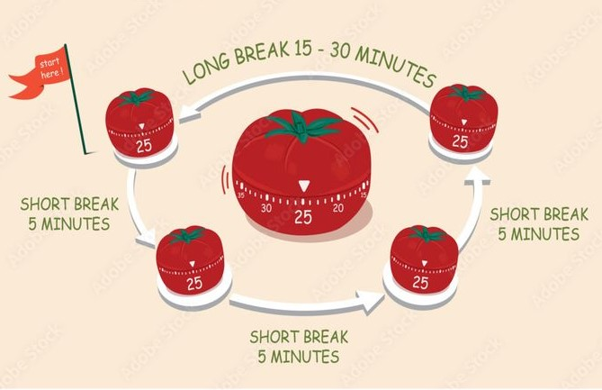

The Pomodoro Technique is a time management method developed by Francesco Cirillo in the late 1980s. It uses a timer to break work into intervals, traditionally 25 minutes in length, separated by short breaks. This technique helps improve focus, productivity, and mental clarity by encouraging frequent breaks and reducing burnout.
